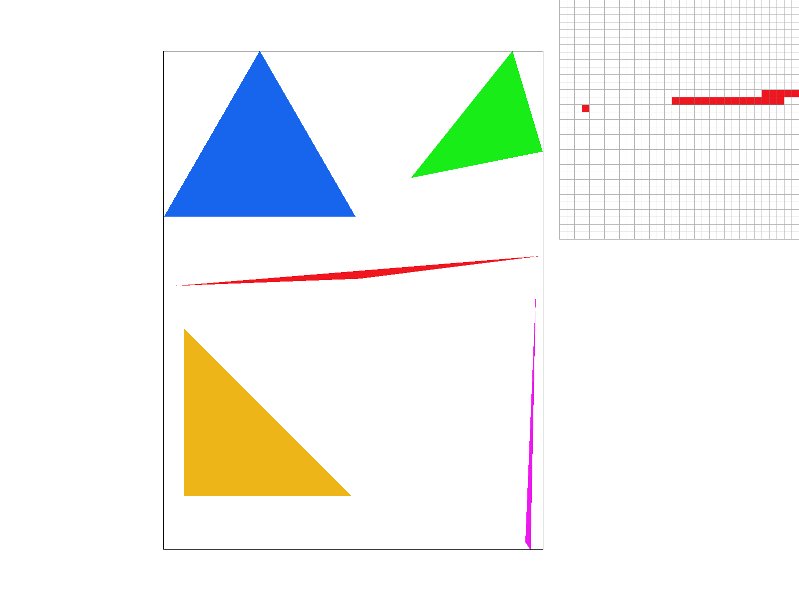
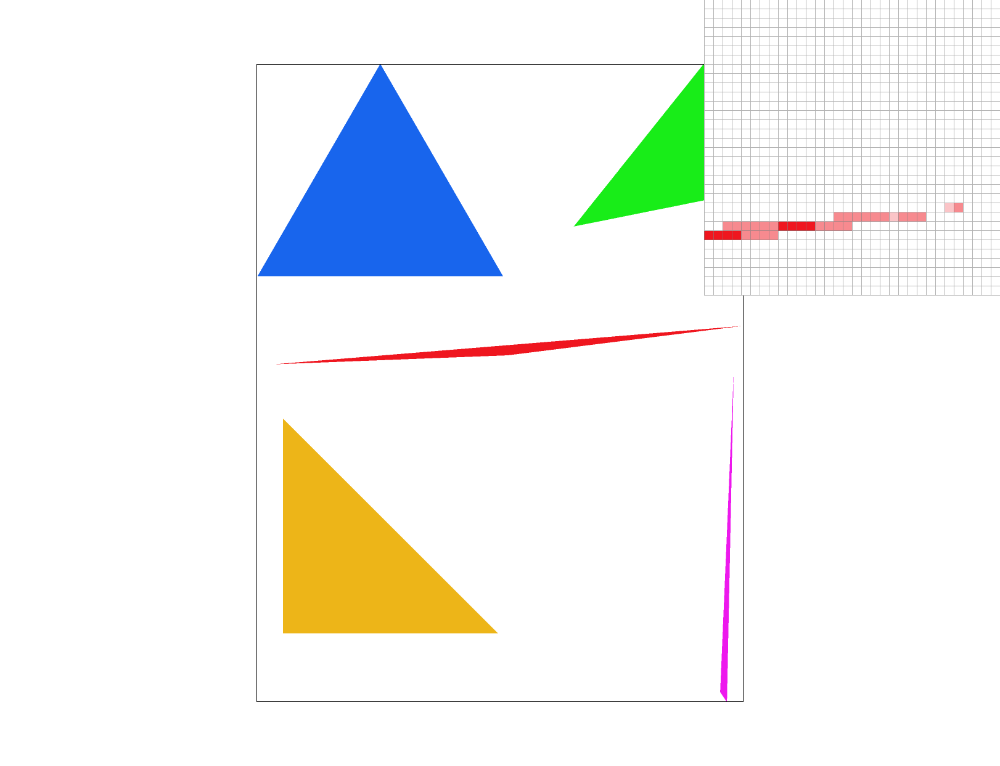
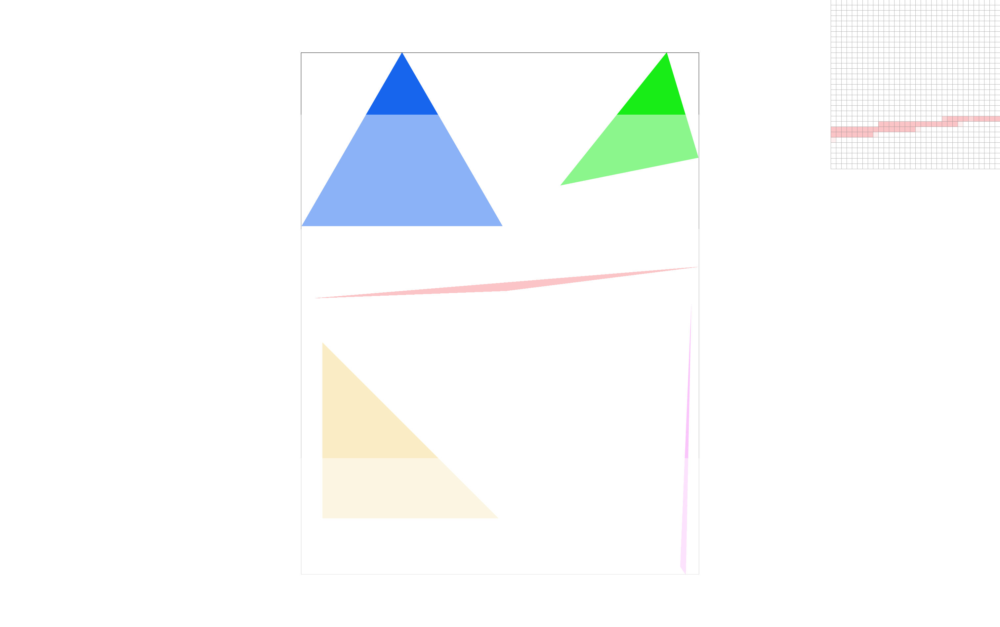
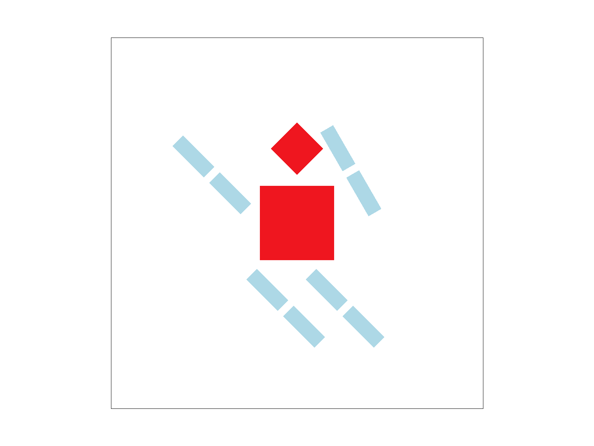
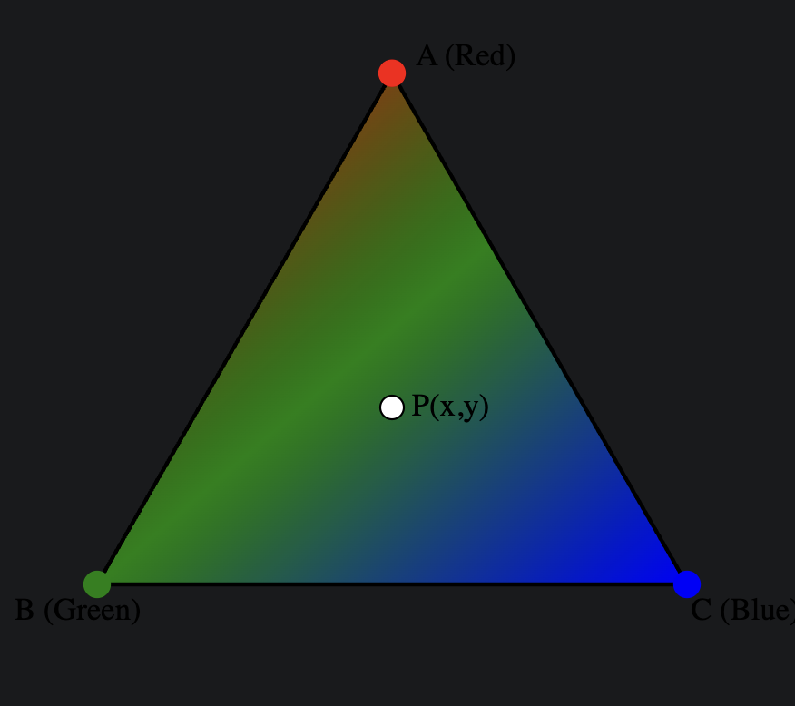
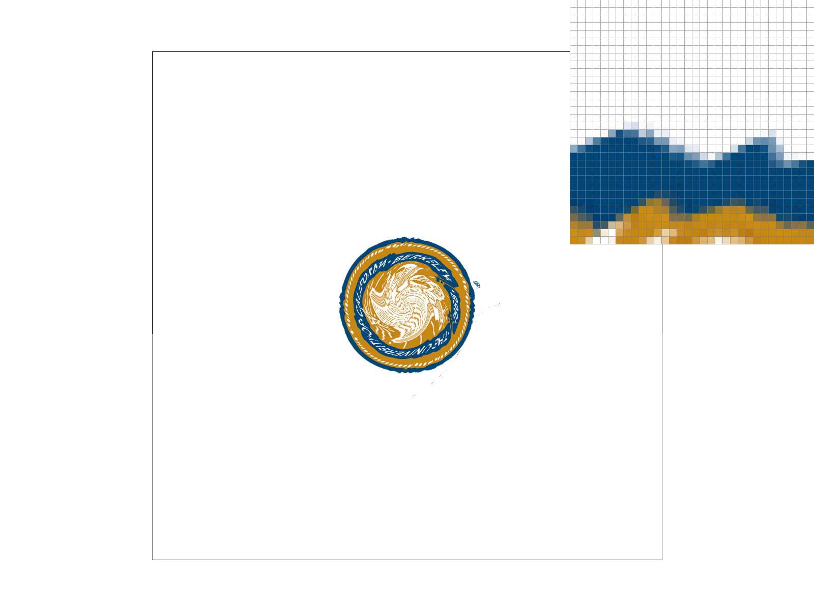
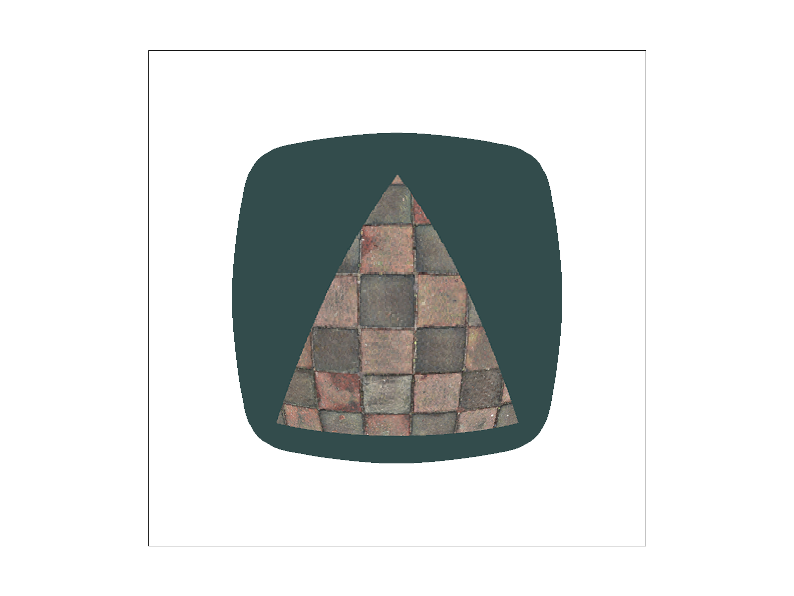
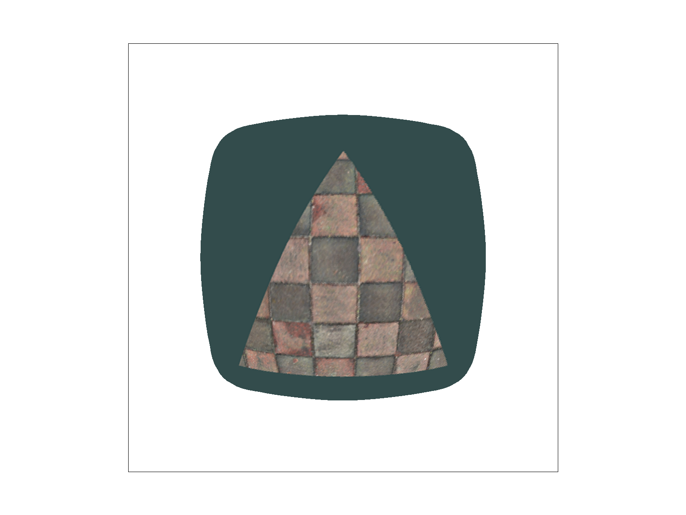

CS184/284A Spring 2026 Homework 1 Write-Up
Link to webpage: cal-cs184-student.github.io/hw-webpages-irisli1/hw1/index.html
Link to GitHub repository: github.com/cal-cs184-student/hw1-rasterizer-corgis
Overview
I built a triangle rasterizer with texture mapping, supporting supersampling, mipmaps, and trilinear filtering. I implemented nearest and bilinear pixel sampling and multiple mipmap level strategies (L_ZERO, L_NEAREST, L_LINEAR). This taught me how sampling choices affect image quality and gave me hands-on experience connecting texture filtering theory to actual rendered images.Task 1: Drawing Single-Color Triangles
To rasterize triangles, one must sample to see if each pixel center is inside the triangle. To do so, one must find a rectangle that can encompass the triangle in the least amount of area as possible. Then, using line equations, check to see if the point is on the line (if L(x,y) = 0), above the line (L(x, y) > 0), or below the line (L(x, y) < 0). This will help give each edge a line equation. Afterwards, go through each pixel in the rectangle box and make sure that the pixels are actually inside the triangle and not just the rectangel. Then, if there aren't pixels outside the rectangle, continue. At the center of each pixel, sample the point. Then, evaluate the function at the sample point. This is to tell us which side of the edge the pixel's center is on. According to the half-plane test, point is considered inside the triangle if the point is on the inside side of all 3 edges. If the pixel the function returns true, then the pixel is indeed inside the triangle and thus we fill in the pixel as a result.My triangle rasterization algorithm is no worse than the standard bounding-box method because it evaluates each sample within the triangle’s bounding box exactly once and pixels outside the box are not examined. By only evaluating the pixels inside the bounding box of the triangle, I am reducing the computation time needed to look at every single pixels in the image and only focusing on those that could largely matter instead.
EXTRA CREDIT: simple bounding box traingle rasterization, I added a tracker to avoid computing the edge equation for each pixel everytime but rather by updating when it is inside the trinagle instead. With optimization, the performance gave 0.436ms whereas without optimization gave 0.454ms.
Timing Comparison
| Version | Time (ms) |
|---|---|
| Baseline | 0.454ms |
| Optimized | 0.436ms |
Here is an example 2x2 gridlike structure using an HTML table. Each tr is a row and each td is a column in that row. You might find this useful for framing and showing your result images in an organized fashion.
|

|
Task 2: Antialiasing by Supersampling
In the data structures I used for supersampling, I used vector of Color objects in sample_buffer to store one color for each subpixel. For each pixel, I made sure it connects to N x N subpixels in sample_buffer which we defined as the square root of sample_rate. For the algorithm, I computed the color for each subpixel for each triangle instead of previously where it was computing one color per pixel once. Then, I stored the subpixel colors in sample_buffer and when all the triangles were rasterized, I then average the subpixels by pixel to get the final pixel color. Last, I wrote the color to rgb_framebuffer_target.Supersampling is useful because it helps reduce aliasing. It can help shapes look more smooth especially on the edges and make sure that quality of the image is improved. In the rasterization pipeline process, I added the NxN subpixels per pixel and changed the step so each subpixel can be evaluated correctly. To antialias triangles, I used supersampling to compute the coverage of the triangle at each subpixel and averaged these to produce visually smooth edges.
Screenshots with Sample Rates 1, 4, 16
These results are observed because as sample rates increase, there are more subpixels sampled per pixel creating a more accurate depiction of the color for the pixel. Higher sample rates evaluate more subpixels per pixel, giving a more accurate estimate of triangle coverage. Averaging these subpixel colors produces smoother edges and reduces aliasing, which is especially visible at the thin and diagonal triangle boundaries.
|
|

|

|
Task 3: Transforms
I was trying to make cubeman into a skiing position with the left and right arms up ready to push down and the left and right legs in a skiing motion over mini hills. I rotated the arms and legs to achieve this visual effect and changed the color of the arms and legs to light blue to better fit the color of snow.|

|
Task 4: Barycentric coordinates
Barycentric coordinates treat every point inside the triangle as a weighted combination of the three vertices. These weights are what brings smoothly interpolate color across the triangle. In the image attached here, the coordinate point (x,y) is blended by the three points A, B, and C and all three are evaluated to assign the (x,y) point the most accurate display of the combination of the colors from all three points.

|

|
Task 5: "Pixel sampling" for texture mapping
Pixel sampling determines the color of a pixel by looking up the texture at its (u, v) coordinates. For each pixel in a triangle, I interpolated the texture coordinates using barycentric coordinates and then sampled the texture. Nearest sampling picks the color of the closest texel but can look blocky. In contrast, bilinear sampling averages the four surrounding texels and provides smoother results. The difference between nearest and bilinear sampling is that nearest sampling is much more simpler by only looking at the texture of the coordinates close to it whereas bilinear sampling takes the 4 surrounding coordinates. There will be a large between the two methods when within four texels, there are four or more varying colors. This will provide large differences because since bilinear sampling takes four surrounding coordinates, it will provide a more accurate and colorful palette compared to nearest sampling that will only show a more soloed color for only taking one coordinate into account.|
|
|

|

|
Task 6: "Level Sampling" with mipmaps for texture mapping
Level sampling picks the mipmap level based on how stretched the texture is on the screen. I used get_level to choose the nearest two levels and then I sampled that level with nearest or bilinear.Nearest is fast but blocky, bilinear is smoother and mipmaps reduce aliasing and speed up distant textures Although supersampling improves quality, it costs in return memory and performance.
|

|

|
|

|